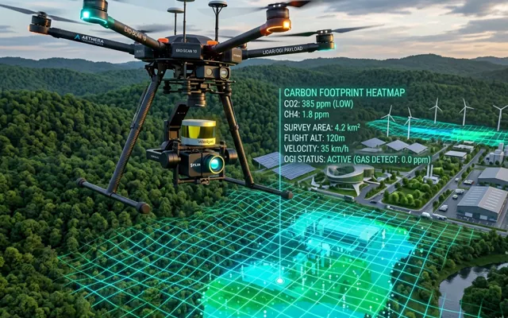
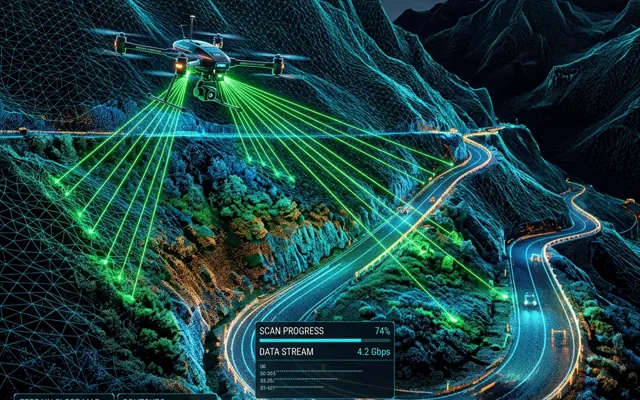
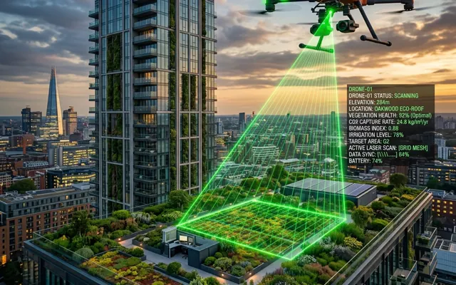
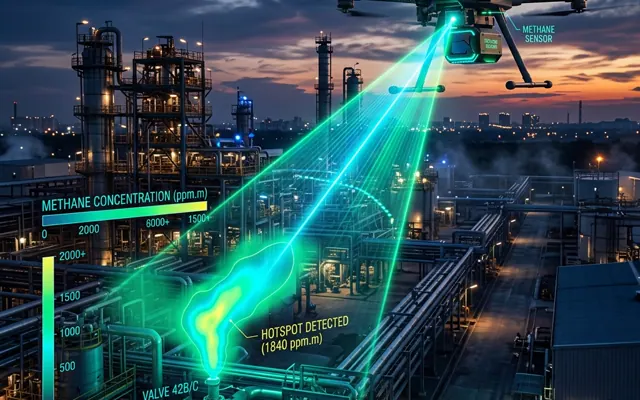
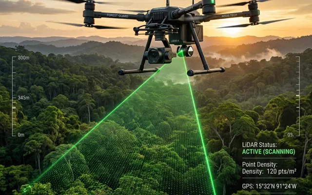
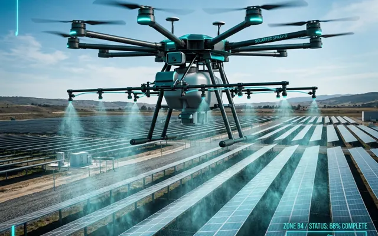
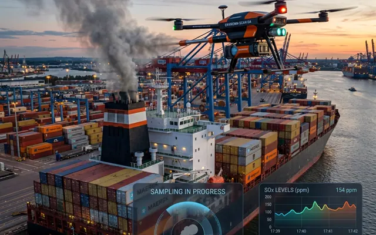
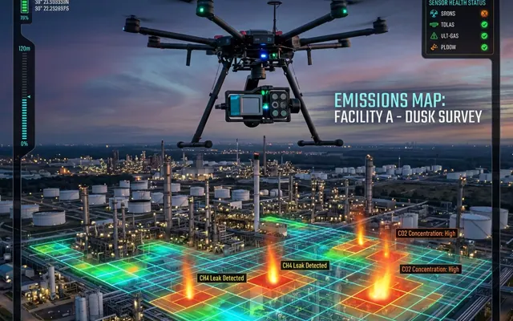

Một nền tảng · Mười hai giải pháp
Dữ liệu từ bầu trời.
Quyết định trên mặt đất.
Hệ sinh thái giải pháp UAV cho quan trắc môi trường, quản trị carbon, giám sát khí thải và chủ động ứng phó rủi ro — nay được kết nối tại một điểm đến duy nhất.
Dữ liệu truy xuất được
Báo cáo sẵn sàng MRV

Hệ sinh thái giải pháp
Bắt đầu từ bài toán của bạn
Mỗi giải pháp là một quy trình hoàn chỉnh, kết nối thiết bị bay, cảm biến chuyên dụng, phân tích dữ liệu và hồ sơ bàn giao.
01
Thiên tai & hạ tầng
Dự báo lũ lụt, giám sát sạt lở và hỗ trợ phản ứng nhanh bằng dữ liệu không gian.
Xem 2 giải pháp → 02Carbon & MRV
Đo đạc, định lượng, lập bản đồ và chuẩn hóa dữ liệu cho báo cáo carbon.
Xem 6 giải pháp → 03Chất lượng không khí
Nhìn thấy bụi mịn, đa khí và điểm nóng ô nhiễm trong cả không gian 2D lẫn 3D.
Xem 3 giải pháp → 04Khí thải & methane
Phát hiện, định lượng và theo dõi nguồn phát thải tại công nghiệp, cảng và bãi rác.
Xem 4 giải pháp →Danh mục dịch vụ
12 giải pháp. Một mục tiêu chung.
Chọn một lĩnh vực hoặc tìm theo nhu cầu để đi thẳng tới landing page chi tiết.
01
S0296
Thiên tai & hạ tầng
Dự báo & khắc phục hậu quả lũ lụt
LiDAR, Thermal và RGB hỗ trợ mô phỏng lũ 3D, tìm kiếm cứu nạn và đánh giá thiệt hại.
Khám phá dịch vụ ↗
02 S0297Thiên tai & hạ tầng
Giám sát sạt lở taluy đường đèo núi
Kết hợp UAV/LiDAR, cảm biến IoT và AI để theo dõi biến dạng, cảnh báo sớm rủi ro.
Khám phá dịch vụ ↗
03
S0291
Carbon & MRV
Bản đồ carbon footprint bằng UAV
Định vị nguồn phát thải và trữ lượng carbon bằng dữ liệu không gian, sẵn sàng cho kiểm kê KNK.
Khám phá dịch vụ ↗
04 S0295Carbon & MRV
MRV carbon mái nhà xanh
Định lượng hấp thụ carbon bằng UAV và ô mẫu thực địa, tạo báo cáo tCO₂e có thể kiểm chứng.
Khám phá dịch vụ ↗
05 S0301Khí thải & methane
Phát hiện rò rỉ methane bằng UAV-TDLAS
Khảo sát nhanh, định lượng kg/h và chuyển dữ liệu đo thành hồ sơ MRV cho tín chỉ carbon.
Khám phá dịch vụ ↗
06 S0300Carbon & MRV
Đo đạc carbon rừng bằng UAV-LiDAR
Lập bản đồ sinh khối, carbon và hồ sơ MRV phục vụ tín chỉ carbon, quản lý rừng, EUDR.
Khám phá dịch vụ ↗
07
S0289
Chất lượng không khí
Quan trắc đa khí bằng UAV
Đo nhiều chỉ tiêu khí theo không gian cho đô thị và khu công nghiệp, nhận diện vùng ô nhiễm.
Khám phá dịch vụ ↗
08
S0298
Chất lượng không khí
Quan trắc bụi mịn đô thị 3D
Bản đồ PM2.5/PM10 theo không gian và cao độ, phát hiện hotspot, đối chiếu QCVN và WHO.
Khám phá dịch vụ ↗
09 S0299Chất lượng không khí
Kiểm soát soiling PV bằng vi hạt tích điện
UAV phun vi hạt làm sạch bụi bám trên module quang điện và đánh giá soiling ratio.
Khám phá dịch vụ ↗
10 S0303Khí thải & methane
Giám sát khí thải tàu biển
UAV sniffer đo SO₂/CO₂, nhận dạng tàu và chuẩn hóa báo cáo phục vụ cảng, cơ quan hàng hải.
Khám phá dịch vụ ↗
11 S0302Khí thải & methane
Giám sát khí nhà kính khu công nghiệp
UAV đa cảm biến thu thập CH₄, CO₂, lập bản đồ không gian và xây dựng báo cáo giám sát KNK.
Khám phá dịch vụ ↗ 12
S0294
12
S0294
Khí thải & methane
Quan trắc methane bãi rác
Lập bản đồ methane theo không gian–cao độ, định lượng theo chiến dịch và chuẩn bị báo cáo MRV.
Khám phá dịch vụ ↗Chưa tìm thấy giải pháp phù hợp
Thử từ khóa ngắn hơn hoặc quay về xem toàn bộ 12 dịch vụ.
Một luồng dữ liệu liền mạch
Từ chuyến bay đến quyết định
Mười hai dịch vụ cùng chia sẻ một cách tiếp cận: thu nhận dữ liệu đúng bài toán, chuyển hóa thành insight có vị trí và bàn giao đầu ra sẵn sàng sử dụng.
Chọn giải pháp của bạn →- 01Thu thậpUAV · LiDAR · Thermal · TDLAS · IoT
- 02Phân tíchBản đồ 2D/3D · AI · GIS · Định lượng
- 03Bàn giaoDashboard · Cảnh báo · Báo cáo · MRV
GASCOLAE UAV SOLUTIONS